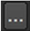

通过表达式，可以从一个节点链接参数，并控制其他节点中的参数值。创建链接表达式时，键入下表中列出的元素; 请记住用句点分隔每个元素。
|
元素 |
描述 |
|
节点名称 |
具有源参数的节点 (即, Transform1 )。 |
|
参数名称 |
具有源值的参数的名称 (例如, 翻译 )。名称是在内部定义的，可能与出现在 Nuke 接口。如有必要，将鼠标指针悬停在参数字段上，其名称将出现在弹出工具提示中。 |
|
子参数名称 (可选) |
某些参数包括子参数，如 x 轴和 y 轴的字段，或红色、绿色和蓝色通道。子参数名称与出现在参数字段之前的标签匹配 (例如, x )。 |
|
时间
|
默认情况下，链接表达式从当前帧编号中提取值，但您可以静态或动态 (即使用时间偏移) 从其他帧中读取值。 如果要读取给定帧的静态值，只需在一组括号内键入该帧编号 (例如, (10) )。 如果要读取动态值，但在时间上有偏移，请键入 t ,时间变量，后跟 (对于向前偏移) 或 - (对于向后偏移)，后跟一个表示偏移值的帧数的数字。例如，键入 (T-2) 将从当前帧捕获两个帧的值。 |
因此，要创建一个链接表达式，在第十帧从变换节点的 x 平移字段中提取值，您可以键入 = 打开表达式对话框的参数，然后输入 Transform1.translate.x (10) 在对话的 表达 字段。
下面的步骤将回顾创建链接表达式的过程。
| 1。 | 单击目标参数 (从另一个参数接收值的参数)。 |
| 2. | 要显示表达式对话框，请在参数上单击鼠标右键，然后选择 添加表达式 , |
或 类型 = 在参数字段中。

| 3. | 在打开的对话框中，键入包含源参数和句点的节点名称。(每个节点在其表面上突出显示其名称。) |
| 4. | 如果要输入多行表达式，可以单击多行编辑字段按钮  . |
| 5. | 按照源参数的名称和句点跟随节点的名称。(如果不知道参数的名称，可以将鼠标悬停在参数的字段上，以便在工具提示中显示参数。) |
| 6. | (可选) 键入子参数的名称和句点。 |
| 7. | (可选) 在括号中输入帧号或偏移变量 (例如, (2) 或 (T-2) ) 为了指定从中提取值的帧或帧范围。 |
| 8。 | 在表达式输入字段旁边，可以单击 Py 按钮自动使您的表达式成为 Python 回调。您也可以切换 R 按钮，将您的表达式解释为表达式或一系列语句。例如，打开多行编辑模式和 Python 模式后，可以输入以下表达式，并获得 15 作为结果值: |
-Execlocal Def 示例 (): A = 5 返回 a Def example2 (): B = 10 返回 b Ret = example () example2 ()
| 9. | 单击 好 。这将链接变成蓝色的参数。在节点图中，节点之间会出现一个绿色箭头，指示它们是通过表达式链接的。 |
| 10. |
要稍后编辑表达式，请在参数上单击鼠标右键，然后选择
编辑表达式
(或按
=
关于参数)。也可以单击动画按钮
|
| 1。 | Ctrl / Cmd + 拖动具有要在接收这些值的参数顶部使用的值的参数。这将链接变成蓝色的参数。在节点图中，节点之间会出现一个绿色箭头，指示它们是通过表达式链接的。 |
要查看或编辑表达式，请在参数上单击鼠标右键，然后选择 编辑表达式 .
| 2. |
如果你想同时链接几个参数,
Ctrl
/
Cmd
+ 拖动动画按钮
|
要查看或编辑用于链接参数的表达式，请单击动画按钮并选择 编辑表达式 .
还可以创建表达式链接，将通道、层和格式控件与各个节点中的其他控件连接起来。由于这些控件不应该是动画的，所以你不能使用所有的 Nuke 表达式，也不能使用 Python 或 Tcl 语言。可以使用链接控件 链接 菜单 在 “属性” 面板上的控件旁边:
| 1。 | 单击 链接 菜单 并选择 设置 链接 。一个 表达 对话框打开。 |
| 2. | 在表达式字段中输入表达式并单击 好 . |
| 3. | 您可以通过单击编辑现有链接 链接 菜单 和选择 编辑 链接 . |
| 4. | 你也可以 Ctrl/Cmd + 拖动 链接菜单 到另一个控件，在两者之间创建链接。 |
| 5. | 要删除链接，请单击 链接 菜单 并选择 移除 链接 . |
|
|